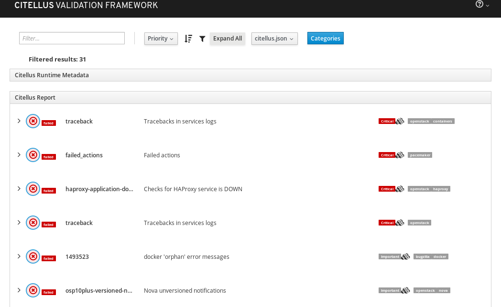

Citellus
Table of contents
Introduction
Citellus is a program that should help with system configuration validation on either live system or any sort of snapshot of the filesystem.
Via execution of ‘plugins’ it reports status on each one execution against the system that gives you an idea on health status, actual problems or problems that will reveal themselves if no preventive action is taken.
Please if you have any idea on any improvements please do not hesitate to open an issue.
Highlights
Plugins written in your language of choice.
Allows to dump output to json file to be processed by other tools.
Allow to visualize html from json output.
Check our sample at: Citellus-www
Ansible playbook support.
Save / restore default settings
Check latest changes on Changelog.md
Check for plugins listing on citellusclient/plugins/
Installation
Just clone the git repository and execute it from there ‘or’
use ‘pipsi’ or create a python virtual env to install package ‘citellus’
sh
# pipsi install citellus
Already using interpreter /usr/bin/python3
Using base prefix '/usr'
New python executable in /home/iranzo/.local/venvs/citellus/bin/python3
Also creating executable in /home/iranzo/.local/venvs/citellus/bin/python
Installing setuptools, pip, wheel...done.
Collecting citellus
Installing collected packages: citellus
Successfully installed citellus-0.1.0.dev1072
Linked script /home/iranzo/.local/bin/citellus.py
Linked script /home/iranzo/.local/bin/magui.py
Done.
Pipsi will take care of installing a virtual environment and link to binary folder so you can call citellus.py or magui.py directly
Remember that pypi package might not contain all the latests plugins features as the github repo one.
Container:
Use our automatically built container in docker hub:
docker run --user=$(id -u) --rm -v $PATHTOSOSREPORT:/data:Z citellus/citellus:latest /data
or build your own using the included Dockerfile in the git checkout.
docker build . -f Dockerfile.centos7-atomic -t citellus:latest # (from git checkout, then note image id)docker run --user=$(id -u) --rm -v $PATHTOSOSREPORT:/data:Z citellus:latest /data
Notes about using docker:
Docker passes as volume the path specified under /data so we do use that parameter with citellus for running the tests.
The default user id within the container is 10001 and the commands or sosreport permissions doesn’t allow that user to gather all the information, so the container is required to run as the current user.
Usage help
We are developing framework in python, the bash framework has been deprecated. Python framework is the only supported framework.
1
2
3
4
5
6
7
8
9
10
11
12
13
14
15
16
17
18
19
20
21
22
23
24
25
26
27
28
29
30
31
32
33
34
35
36
37
38
39
40
41
42
43
44
45
46
47
48
49
50
51
52
53
54
55
56
57
58
59 usage : citellus . py [ arguments ] [ -h ] [ -l ] [ --list-plugins ] [ --list-extensions ] [ --list-categories ] [ --description ] [ --list-hooks ] [ --output FILENAME ] [ --web ] [ --run ] [ --find ] [ --blame ] [ --lang ] [ --only-failed ] [ -v ] [ -d {INFO,DEBUG,WARNING,ERROR,CRITICAL} ] [ -q ] [ -i SUBSTRING ] [ -x SUBSTRING ] [ -p [0-1000 ] ] [ -hf SUBSTRING ] [ --dump-config ] [ --no-config ] [ sosreport ] Citellus allows to analyze a directory against common set of tests , useful for finding common configuration errors positional arguments : sosreport optional arguments : - h , -- help show this help message and exit - l , -- live Work on a live system instead of a snapshot -- list - plugins Print a list of discovered plugins and exit -- list - extensions Print a list of discovered extensions and exit -- list - categories With list - plugins , also print a list and count of discovered plugin categories -- description With list - plugins , also outputs plugin description -- list - hooks Print a list of discovered hooks and exit -- output FILENAME , - o FILENAME Write results to JSON file FILENAME -- web Write results to JSON file citellus . json and copy html interface in path defined in -- output -- run , - r Force run of citellus instead of reading existing 'citellus.json' -- find Use provided path at starting point for finding citellus . json and print them based on filters defined Output and logging options : -- blame Report time spent on each plugin -- lang Define locale to use -- only - failed , - F Only show failed tests - v , -- verbose Increase verbosity of output ( may be specified more than once ) - d { INFO , DEBUG , WARNING , ERROR , CRITICAL } , -- loglevel { INFO , DEBUG , WARNING , ERROR , CRITICAL } Set log level - q , -- quiet Enable quiet mode Filtering options : - i SUBSTRING , -- include SUBSTRING Only include plugins that contain substring - x SUBSTRING , -- exclude SUBSTRING Exclude plugins that contain substring - p [ 0-1000 ] , -- prio [ 0-1000 ] Only include plugins are equal or above specified prio - hf SUBSTRING , -- hfilter SUBSTRING Only include hooks that contain substring Config options : -- dump - config Dump config to console to be saved into file -- no - config Do not read configuration from file / home / iranzo / DEVEL / citellus / citellusclient / citellus . conf or ~/ . citellus . conf
Check how does it look in an execution at:
Plugins and their descriptions
This is new feature of citellus that will show you available scripts and their description.
./ citellus .py -- list - plugins -- description
{' backend ' : ' core ' , ' description ' : ' This plugin checks if Apache reaches its MaxRequestWorkers ' , ' plugin ' : ' /home/iranzo/DEVEL/citellus/citellusclient/plugins/core/bugzilla/httpd/1406417.sh ' }
{' backend ' : ' core ' , ' description ' : ' Checks missconfigured host in nova vs hostname ' , ' plugin ' : ' /home/iranzo/DEVEL/citellus/citellusclient/plugins/core/bugzilla/openstack/ceilometer/1483456.sh ' }
{' backend ' : ' core ' , ' description ' : ' Checks for outdated ceph packages ' , ' plugin ' : ' /home/iranzo/DEVEL/citellus/citellusclient/plugins/core/bugzilla/openstack/ceph/1358697.sh ' }
{' backend ' : ' core ' , ' description ' : ' Checks httpd WSGIApplication defined to avoid wrong redirection ' , ' plugin ' : ' /home/iranzo/DEVEL/citellus/citellusclient/plugins/core/bugzilla/openstack/httpd/1478042.sh ' }
{' backend ' : ' core ' , ' description ' : ' Checks for keystone transaction errors on cleanup ' , ' plugin ' : ' /home/iranzo/DEVEL/citellus/citellusclient/plugins/core/bugzilla/openstack/keystone/1473713.sh ' }
{' backend ' : ' core ' , ' description ' : ' Checks for keystone LDAP domain template problem ' , ' plugin ' : ' /home/iranzo/DEVEL/citellus/citellusclient/plugins/core/bugzilla/openstack/keystone/templates/1519057.sh ' }
{' backend ' : ' core ' , ' description ' : ' Checks for wrong auth_url configuration in metadata_agent.ini ' , ' plugin ' : ' /home/iranzo/DEVEL/citellus/citellusclient/plugins/core/bugzilla/openstack/neutron/1340001.sh ' }
{' backend ' : ' core ' , ' description ' : ' Checks python-ryu tracebacks ' , ' plugin ' : ' /home/iranzo/DEVEL/citellus/citellusclient/plugins/core/bugzilla/openstack/neutron/1450223.sh ' }
Doing a live check example
This is an example of execution of Citellus using all openstack and pacemaker tests collections.
1
2
3
4
5
6
7
8
9
10
11
12
13
14
15
16
17
18
19
20
21
22 ./citellus.py -q -l -i pacemaker -i openstack
INFO:citellus:using default plugin path
# /root/citellus/citellusclient/plugins/core/bugzilla/openstack/ceilometer_bug_1483456.sh: failed
https://bugzilla.redhat.com/show_bug.cgi?id=1483456
# /root/citellus/citellusclient/plugins/core/bugzilla/openstack/ceph_bug_1358697.sh: failed
outdated ceph packages: https://bugzilla.redhat.com/show_bug.cgi?id=1358697
# /root/citellus/citellusclient/plugins/core/bugzilla/openstack/httpd_bug_1478042.sh: skipped
# /root/citellus/citellusclient/plugins/core/bugzilla/openstack/keystone_bug_1473713.sh: okay
# /root/citellus/citellusclient/plugins/core/bugzilla/openstack/neutron_bug_1450223.sh: skipped
# /root/citellus/citellusclient/plugins/core/bugzilla/openstack/neutron_bug_1474092.sh: okay
# /root/citellus/citellusclient/plugins/core/bugzilla/openstack/neutron_bug_1489066.sh: okay
# /root/citellus/citellusclient/plugins/core/bugzilla/openstack/nova_bug_1474092.sh: okay
# /root/citellus/citellusclient/plugins/core/bugzilla/openstack/swift_bug_1500607.sh: failed
swift expirer https://bugzilla.redhat.com/show_bug.cgi?id=1500607
# /root/citellus/citellusclient/plugins/core/launchpad/openstack/keystone_bug_1649616.sh: okay
# /root/citellus/citellusclient/plugins/core/openstack/ceilometer/expiration.sh: failed
ceilometer.conf setting must be updated:
alarm_history_time_to_live = -1
ceilometer.conf setting must be updated:
event_time_to_live = -1
ceilometer.conf setting must be updated:
metering_time_to_live = -1
Doing a fs snapshot check example
This is an example of execution of Citellus using pacemaker and openstack filter against fs snapshot.
1
2
3
4
5
6
7
8
9
10
11
12
13
14
15
16
17
18
19
20
21
22 ./citellus.py -q -i pacemaker -i openstack sosreport-undercloud-0.redhat.local-20171117212710/
INFO:citellus:using default plugin path
# /root/citellus/citellusclient/plugins/core/bugzilla/openstack/ceilometer_bug_1483456.sh: failed
https://bugzilla.redhat.com/show_bug.cgi?id=1483456
# /root/citellus/citellusclient/plugins/core/bugzilla/openstack/ceph_bug_1358697.sh: failed
outdated ceph packages: https://bugzilla.redhat.com/show_bug.cgi?id=1358697
# /root/citellus/citellusclient/plugins/core/bugzilla/openstack/httpd_bug_1478042.sh: skipped
# /root/citellus/citellusclient/plugins/core/bugzilla/openstack/keystone_bug_1473713.sh: okay
# /root/citellus/citellusclient/plugins/core/bugzilla/openstack/neutron_bug_1450223.sh: skipped
# /root/citellus/citellusclient/plugins/core/bugzilla/openstack/neutron_bug_1474092.sh: okay
# /root/citellus/citellusclient/plugins/core/bugzilla/openstack/neutron_bug_1489066.sh: okay
# /root/citellus/citellusclient/plugins/core/bugzilla/openstack/nova_bug_1474092.sh: okay
# /root/citellus/citellusclient/plugins/core/bugzilla/openstack/swift_bug_1500607.sh: failed
swift expirer https://bugzilla.redhat.com/show_bug.cgi?id=1500607
# /root/citellus/citellusclient/plugins/core/launchpad/openstack/keystone_bug_1649616.sh: okay
# /root/citellus/citellusclient/plugins/core/openstack/ceilometer/expiration.sh: failed
ceilometer.conf setting must be updated:
alarm_history_time_to_live = -1
ceilometer.conf setting must be updated:
event_time_to_live = -1
ceilometer.conf setting must be updated:
metering_time_to_live = -1
HTML Interface
Create by using --output $FOLDER and --web, open the generated citellus.html.

http://host/citellus.html?json=magui.json
Ansible playbooks
Citellus can also run Ansible playbooks via extension
The are some additional conventions that are detailed in ansible-playbooks.md that determine how to code them to be executed in live or snapshoot mode.
Commands have been extended to allow --list-plugins to list them and include /exclude filters to work with them.
All of them must end in .yml.
found #1 extensions / found #0 tests at default path
mode : fs snapshot .
# Running extension ansible - playbook
# / home / iranzo / DEVEL / citellus / citellus / playbooks / system / clock - ntpstat .yml : skipped
Skipped for incompatible operating mode
vs
found #2 extensions with #2 plugins
mode: live
# /home/iranzo/DEVEL/citellus/citellusclient/plugins/ansible/openstack/rabbitmq/ha-policies.yml: okay
# /home/iranzo/DEVEL/citellus/citellusclient/plugins/ansible/system/clock-ntpstat.yml: failed
{"changed": false, "cmd": "ntpstat", "msg": "[Errno 2] No such file or directory",
Powered by Pelican . Theme blueidea , inspired by the default theme.